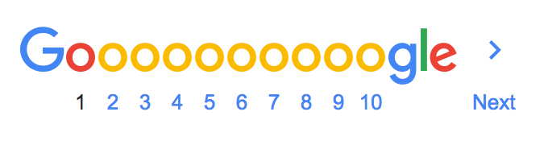

About 17,90,000 results (0.50 seconds)
HTML Colors from Image - HTML Color Codes
https://html-color-codes.info/colors-from-image/
Get HTML colors from any image with this simple online tool.Color Picker online | hex Color Picker | html Color Picker
imagecolorpicker.com/
HTML Color Picker. Click on the image to get the html codes.. Use the online image color picker right to select a color and get the html Color Code of this pixel. Also you get the HEX value, RGB value and HSV value. You can put a picture url in the textbox below or upload your own image. (for example an screenshot of your ...Online Image color picker - Pine Tools
pinetools.com/image-color-picker
Invert colors · Flip image · Darken image · Lighten image · Change brightness · Change contrast · Grayscale image · Change saturation · Change vibrance · Change exposure · Adjust gamma · Sepia effect · Clip image · Add noise · Adjust hue · Sharpen image · Special filters · Adjust channels · Vignette effect · Colorize image ...Color Code Picker - RGB, HEX, HSL
https://www.colorcodepicker.com/
Grab the color palette from an image. Additionally with this simple web color picker tool you can upload another image and get the RGB, HEX and HSL color code of the pixel without installing a software.Find Color On Logo Image -RGB, CMYK, PMS (Pantone Color...
www.ginifab.com/feeds/pms/pms_color_in_image.php
If you have a logo image, and you would like to know what Pantone color code in it. or you would like to know what PMS color closest to the logo. Unfortunately, you don't have Photoshop or Illustrator, this is your best online free color pick tool. How to use this tool. Upload your logo image (from local computer or url) ...HTML Image Color Picker
imagecolorpicker.net/
You can now use this online html image color picker to select a pixel and get the hex (HTML) or RGB code of its color. Drop the image in the box and mouse over the pixel you want the color. The color will appear in the box on the right with its codes. You can lock the color clicking on it. You can get color of logos, photos, ...Color Picker by WebpageFX
https://www.webpagefx.com/web-design/color-picker/
Color Picker - Tip: View hex color codes, rgb values, css examples at https://www.webpagefx.com/web-design/color-picker/ Tip: See color combinations by clicking a link beside "Generate Color Scheme"Name that Color - Chirag Mehta : chir.ag
chir.ag/projects/name-that-color/
Sep 3, 2007 - Chirag Mehta - Personal Web Log - 'blog - Chime Softwares - Indian Blogger live from Saint Petersburg, Florida, St. Pete, FL.Color Extraction - TinEye Labs - Color Extraction Lab
https://labs.tineye.com/color/
TinEye is a reverse image search engine. Search by image: Give it an image and it will tell you where the image appears on the web.| People also ask |
| How do I find the RGB of a color? |
| What color do you see it? |
| How do you find the hex code of a color? |
| What is the color of the dress? |
Color Name & Hue | Colblindor
www.color-blindness.com/color-name-hue/
With this little tool you can either enter RGB (Red-Green-Blue) values, HSB (Hue-Saturation-Brightness) numbers or a hexadecimal code for a color, to find its closest match of a named color and its corresponding hue. It is also possible to just use the sliders to see how color hues are changing. The list of colors comprises ...| Searches related to color detector online | |
|---|---|
| color identifier tool | color picker download |
| color picker from webside | colour picker chrome |
| color code to rgb | color identifies |
| color picker tool | color code teller |
